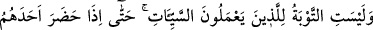
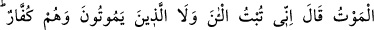
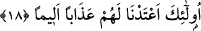

Feridüddîn Attar da şöyle diyor:
Kaldır yüzünden perdeyi görünsün cemalin,
Eğer kendi cemâlinden varsa haberin.
Kaf dağı gibi olan cismâniyetten geç,
Rûhâniyet mülkünün yurdu tarafını seç.
Bu bozuk dünyâya kanıp aldanma yâhu
Zîrâ onun ne izzeti kalır, ne malı, ne altunu
Eğer yıkanıp rengi ve güzelliği giderse yüzünün
Kimse satın almaz seni, değeri kalmaz yüzünün.
Allah Teâlâ cümlemizi, dünyâya meyletmekten, sabah akşam heveslerimizde ısrar
etmemiz yüzünden kalplerimizin ölmesinden muhafaza buyursun.
18- Yoksa kötülükleri yapıp yapıp da içlerinden birine ölüm gelip çatınca «Ben
şimdi tevbe ettim» diyenler ile kâfir olarak ölenler için (kabul edilecek) tevbe
yoktur. Onlar için acı bir azap hazırlamışızdır.
“Yoksa kötülükleri”, günahları “yapıp yapıp da içlerinden birine ölüm gelip
çatınca”; yâni ölüm alâmetleri değil de -çünkü o vakit tevbe kabûl edilir- sekerât-i
mevt vâki olup ölüm meleğini müşâhede edince, “Ben şimdi” günahlarımdan “tevbe
ettim.” diyenler ile kâfir olarak” yani küfürlerinde ısrar ederek “ölenler”, ölüm
yaklaştığında ya da âhiretteki azâbı gördüklerinde onlar “için tevbe yoktur”. O esnâda
tevbeleri kabûl edilmeyecektir; çünkü o hâl hür olarak seçme (ihtiyâr) hâli değil,
mecbûriyet (ıztırâr) hâlidir. “O iki grup “için” dâimî; “acı bir azap hazırlamışızdır.”
Bil ki, Allah Teâlâ, ölüm ânında tevbenin hiç bir değer taşımadığını tam olarak
göstermek için tevbeyi ölüm gelip çatana kadar bırakıp te’hir eden fâsıklarla kâfir
olarak ölenleri, tevbelerinin kabûl edilmemesi konusunda bir tutmuştur. Sanki şöyle
buyurmuş olmaktadır: “Bunların tevbesiyle şunların tevbe etmemesi tevbeleri kabûl
edilmeyecek olduğuna göre müsâvîdir.” Çünkü ölümün gelip çatması, âhiret hallerinin
ilkidir. Dolayısıyla nasıl ki küfür üzere ölenin kesin olarak tevbe imkânı kalmadıysa,
tevbeyi ölümün gelip çatmasına kadar te’hir edenin de tevbe imkanı kalmamıştır. O
esnada tevbeye yer yoktur. Allah Teâlâ’nın bu iki grubu birbirine denk sayması,
günahkârların tevbe konusunda ihmalkâr davranmamalarını, akıllı kişilerin de mağfiret